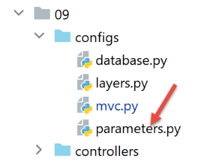
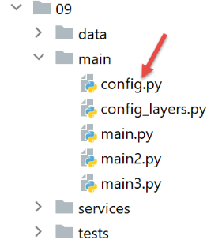

34. Practical Exercise: Version 14
The [http-servers/09] folder for version 14 is obtained by copying the [http-servers/08] folder from version 13.
34.1. Introduction
CSRF (Cross-Site Request Forgery) is a session hijacking technique. It is explained as follows on Wikipedia (https://fr.wikipedia.org/wiki/Cross-site_request_forgery):
- Malorie manages to find out the link that allows her to delete the message in question.
- Malorie sends a message to Alice containing a pseudo-image to display (which is actually a script). The image’s URL is the link to the script that deletes the desired message.
- Alice must have an open session in her browser for the site Malorie is targeting. This is a prerequisite for the attack to succeed silently without triggering an authentication request that would alert Alice. This session must have the necessary permissions to execute Malorie’s destructive request. It is not necessary for a browser tab to be open on the target site, nor even for the browser to be running. It is sufficient for the session to be active.
- Alice reads Malorie’s message; her browser uses Alice’s open session and does not request interactive authentication. It attempts to retrieve the image’s content. In doing so, the browser triggers the link and deletes the message, retrieving a text-based web page as the image’s content. Since it doesn’t recognize the associated image type, it doesn’t display an image, and Alice doesn’t realize that Malorie has just made her delete a message against her will.
Even explained this way, the CSRF technique is difficult to understand. Let’s draw a diagram:

- In [1-2], Alice communicates with the forum (Site A). This forum maintains a session for each user. Alice’s browser stores this session cookie locally and sends it back every time it makes a new request to Site A;
- In [3], Malorie sends a message to Alice. Alice reads it in her browser. The message is in HTML format and contains a link to an image on Site B. In fact, this link is a link to a JavaScript script that runs once it reaches Alice’s browser;
- This JavaScript script then makes a request to Site A. Alice’s browser automatically sends the request along with the locally stored session cookie. This is where the attack occurs: Malorie has successfully accessed Site A using Alice’s session credentials. From this point on, regardless of what happens, the attack has taken place;
To counter this type of attack, Site A can proceed as follows:
- With each exchange [1-2] with Alice, Site A sends a key, hereafter referred to as a CSRF token, which Alice must return in her next request. Thus, with each request, Alice must send two pieces of information:
- the session cookie;
- the CSRF token received in the response to her last request to Site A;
This is where the protection lies: while the browser automatically sends the session cookie back to Site A, it does not do so for the CSRF token. For this reason, exchange 6-7 performed by the attack script will be rejected because request 6 will not have sent the CSRF token;
Site A can send Alice the CSRF token in various ways for an HTML application:
- It can send an HTML page with every request where all links contain the CSRF token, for example [http://siteA/chemin/csrf_token]. When Alice clicks on one of these links during the next request, Site A will simply retrieve the CSRF token from the request URL and verify that it is valid. This is what will be done here;
- for HTML pages containing a form, it can send the form with a hidden field [input type='hidden'] containing the CSRF token. This will then be automatically submitted with the form when Alice submits the page. Site A will retrieve the CSRF token from the body of the request;
- other techniques are possible;
34.2. Configuration

We add two booleans to the application’s [parameters] configuration:
- [with_redissession]: When set to True, the application uses a Redis session. When set to False, the application uses a standard Flask session;
- [with_csrftoken]: When set to True, the application’s URLs contain a CSRF token;
# thread pause duration in seconds
"sleep_time": 0,
# Redis server
"with_redissession": True,
"redis": {
"host": "127.0.0.1",
"port": 6379
},
# CSRF token
"with_csrftoken": False,
34.3. CSRF Implementation
We will ensure that when:
config['parameters']['with_csrftoken']
is set to [True], the application sends web pages to the client browser whose links will contain a CSRF token.
34.3.1. The [flask_wtf] module
The CSRF token will be implemented using the [flask_wtf] module, which we install in a PyCharm terminal:
(venv) C:\Data\st-2020\dev\python\cours-2020\python3-flask-2020\packages>pip install flask_wtf
Collecting flask_wtf
…
34.3.2. View templates
We are introducing a new class in the models:

The [AbstractBaseModelForView] class is as follows:
from abc import abstractmethod
from flask import Request
from flask_wtf.csrf import generate_csrf
from werkzeug.local import LocalProxy
from InterfaceModelForView import InterfaceModelForView
class AbstractBaseModelForView(InterfaceModelForView):
@abstractmethod
def get_model_for_view(self, request: Request, session: LocalProxy, config: dict, result: dict) -> dict:
pass
def get_csrftoken(self, config: dict):
# csrf_token
if config['parameters']['with_csrftoken']:
return f"/{generate_csrf()}"
else:
return ""
- line 9: the [AbstractBaseModelForView] class implements the [InterfaceModelForView] interface implemented by the model classes;
- lines 11–13: the [get_model_for_view] method is not implemented;
- Lines 15–20: The [get_csrftoken] method generates the CSRF token if the application has been configured to use them. Depending on the situation, the function returns a token preceded by a slash (/) or an empty string. The [generate_csrf] function always generates the same value for a given client request. Processing a request involves executing various functions. Using [generate_csrf] in these functions always generates the same value. On the next request, however, a new CSRF token is generated;
All M models for view V will include the CSRF token as follows:
class ModelForAuthenticationView(AbstractBaseModelForView):
def get_model_for_view(self, request: Request, session: LocalProxy, config: dict, result: dict) -> dict:
# encapsulate the page data in a model
model = {}
…
# CSRF token
model['csrf_token'] = super().get_csrftoken(config)
# Return the model
return model
- Each model class extends the base class [AbstractBaseModelForView];
- Line 8: The CSRF token is requested from the parent class. We get either an empty string or a string like [/Ijk4NjQ2ZDdjZjI0ZDJiYTVjZTZjYmFhZGNjMjE3Y2U5M2I3ODI0NzYi.Xy5Okg.n-kSR_nslkndfT7AFVy2UDtdb8c];
34.3.3. The Views
From what we’ve just seen, all views V will have the CSRF token in their template M. They can therefore use it in the links they contain. Let’s look at a few examples:
The authentication fragment [v_authentification.html]
<!-- HTML form - values are submitted using the [authenticate-user] action -->
<form method="post" action="/authenticate-user{{model.csrf_token}}">
<!-- title -->
<div class="alert alert-primary" role="alert">
<h4>Please log in</h4>
</div>
…
</form>
- line 2: based on what we just saw, the URL for the [action] attribute will be:
[/authenticate-user/Ijk4NjQ2ZDdjZjI0ZDJiYTVjZTZjYmFhZGNjMjE3Y2U5M2I3ODI0NzYi.Xy5Okg.n-kSR_nslkndfT7AFVy2UDtdb8c]
or
depending on whether the application has been configured to use CSRF tokens;
The tax calculation fragment [v-calcul-impot.html]
<!-- HTML form submitted via POST -->
<form method="post" action="/calculate-tax{{model.csrf_token}}">
<!-- 12-column message on a blue background -->
<div class="col-md-12">
<div class="alert alert-primary" role="alert">
<h4>Fill out the form below and submit it</h4>
</div>
</div>
…
</form>
The simulations section [v-liste-simulations.html]
{% if model.simulations is undefined or model.simulations|length==0 %}
<!-- message on blue background -->
<div class="alert alert-primary" role="alert">
<h4>Your simulation list is empty</h4>
</div>
{% endif %}
{% if model.simulations is defined and model.simulations.length!=0 %}
<!-- message on blue background -->
<div class="alert alert-primary" role="alert">
<h4>List of your simulations</h4>
</div>
<!-- table of simulations -->
<table class="table table-sm table-hover table-striped">
…
<!-- table body (displayed data) -->
<tbody>
<!-- display each simulation by iterating through the simulation table -->
{% for simulation in model.simulations %}
<!-- display a row of the table with 6 columns - <tr> tag -->
<!-- column 1: row header (simulation number) - <th scope='row'> tag -->
<!-- column 2: parameter value [married] - <td> tag -->
<!-- Column 3: Parameter value [children] - <td> tag -->
<!-- column 4: parameter value [salary] - tag <td> -->
<!-- column 5: parameter value [tax] (of the tax) - tag <td> -->
<!-- column 6: parameter value [surcharge] - tag <td> -->
<!-- column 7: parameter value [discount] - tag <td> -->
<!-- column 8: parameter value [reduction] - tag <td> -->
<!-- column 9: parameter value [rate] (of tax) - tag <td> -->
<!-- column 10: link to delete the simulation - tag <td> -->
<tr>
<th scope="row">{{simulation.id}}</th>
<td>{{simulation.married}}</td>
<td>{{simulation.children}}</td>
<td>{{simulation.salary}}</td>
<td>{{simulation.tax}}</td>
<td>{{simulation.surcharge}}</td>
<td>{{simulation.discount}}</td>
<td>{{simulation.reduction}}</td>
<td>{{simulation.rate}}</td>
<td><a href="/supprimer-simulation/{{simulation.id}}{{modèle.csrf_token}}">Delete</a></td>
</tr>
{% endfor %}
</tr>
</tbody>
</table>
{% endif %}
The menu snippet [v-menu.html]
<!-- Bootstrap menu -->
<nav class="nav flex-column">
<!-- Displaying a list of HTML links -->
{% for optionMenu in model.optionsMenu %}
{% endfor %}
</nav>
34.3.4. Routes
There are now two types of routes, depending on whether or not they use a CSRF token:

- [routes_without_csrftoken] are routes without a CSRF token. These are the routes from the previous version;
- [routes_with_csrftoken] are routes with a CSRF token.
In [routes_with_csrftoken], routes now have an additional parameter, the CSRF token:
# the front controller
def front_controller() -> tuple:
# forward the request to the main controller
main_controller = config['mvc']['controllers']['main-controller']
return main_controller.execute(request, session, config)
@app.route('/', methods=['GET'])
def index() -> tuple:
# Redirect to /init-session/html
return redirect(url_for("init_session", type_response="html", csrf_token=generate_csrf()), status.HTTP_302_FOUND)
# init-session
@app.route('/init-session/<string:type_response>/<string:csrf_token>', methods=['GET'])
def init_session(type_response: str, csrf_token: str) -> tuple:
# execute the controller associated with the action
return front_controller()
# authenticate-user
@app.route('/authenticate-user/<string:csrf_token>', methods=['POST'])
def authenticate_user(csrf_token: str) -> tuple:
# execute the controller associated with the action
return front_controller()
# calculate-tax
@app.route('/calculate-tax/<string:csrf_token>', methods=['POST'])
def calculate_tax(csrf_token: str) -> tuple:
# Execute the controller associated with the action
return front_controller()
# Calculate taxes in batches
@app.route('/calculate-taxes/<string:csrf_token>', methods=['POST'])
def calculate_taxes(csrf_token: str):
# Execute the controller associated with the action
return front_controller()
# list-simulations
@app.route('/list-simulations/<string:csrf_token>', methods=['GET'])
def list_simulations(csrf_token: str) -> tuple:
# execute the controller associated with the action
return front_controller()
# delete-simulation
@app.route('/delete-simulation/<int:number>/<string:csrf_token>', methods=['GET'])
def delete_simulation(number: int, csrf_token: str) -> tuple:
# execute the controller associated with the action
return front_controller()
# end-session
@app.route('/logout/<string:csrf_token>', methods=['GET'])
def end_session(csrf_token: str) -> tuple:
# execute the controller associated with the action
return front_controller()
# display-tax-calculation
@app.route('/display-tax-calculation/<string:csrf_token>', methods=['GET'])
def display_tax_calculation(csrf_token: str) -> tuple:
# Execute the controller associated with the action
return front_controller()
# get-admindata
@app.route('/get-admindata/<string:csrf_token>', methods=['GET'])
def get_admindata(csrf_token: str) -> tuple:
# execute the controller associated with the action
return front_controller()
All routes now have the CSRF token in their parameters, including the [/init-session] route. This means that the client cannot launch the application by directly typing the URL [/init-session/html] because the CSRF token will be missing. It must now go through the [/] URL in lines 7–10.
The routes are selected in the main script [main]:
…
# the main thread no longer needs the logger
logger.close()
# if there was an error, stop
if error:
sys.exit(2)
# Import the web application routes
if config['parameters']['with_csrftoken']:
import routes_with_csrftoken as routes
else:
import routes_without_csrftoken as routes
# Configure routes
routes.config = config
# Start the Flask application
routes.execute(__name__)
- lines 9–13: selecting routes depending on whether the application uses CSRF tokens;
34.3.5. The [MainController]
For each request, the server must verify the presence of the CSRF token. We will do this in the main controller [MainController], which handles all requests:
from flask_wtf.csrf import generate_csrf, validate_csrf
…
# process the request
try:
# logger
logger = Logger(config['parameters']['logsFilename'])
…
# retrieve the path elements
params = request.path.split('/')
# the action is the first element
action = params[1]
…
if config['parameters']['with_csrftoken']:
# the csrf_token is the last element of the path
csrf_token = params.pop()
# we check the token's validity
# an exception will be raised if the csrf_token is not the expected one
validate_csrf(csrf_token)
…
except ValidationError as exception:
# invalid CSRF token
result = {"action": action, "status": 121, "response": [f"{exception}"]}
status_code = status.HTTP_400_BAD_REQUEST
except BaseException as exception:
# other (unexpected) exceptions
result = {"action": action, "status": 131, "response": [f"{exception}"]}
status_code = status.HTTP_400_BAD_REQUEST
finally:
pass
# Add the csrf_token to the result
result['csrf_token'] = generate_csrf()
# log the result sent to the client
log = f"[MainController] {result}\n"
logger.write(log)
- Line 20: Retrieve the CSRF token from the request URL of the form [http://machine:port/path/action/param1/param2/…/csrf_token]. The session token is always the last element of the URL;
- line 23: the validity of the CSRF token retrieved from the URL is checked against the session’s CSRF token. If it is invalid, the [validate_csrf] function throws a [ValidationError] exception (line 27);
- line 41: the CSRF token is included in the response sent to the client. JSON and XML clients will need it. This is because these clients do not receive HTML pages with the CSRF token in the links contained within the pages. They will therefore receive it in the JSON or XML response sent by the server;
Note: The [validate_csrf] function on line 23 does not check for an exact match. The CSRF token is stored in the session under the key [csrf_token]. Tests seem to indicate that a CSRF token is valid if it was generated during the session. Thus, if you manually replace the CSRF token [xyz] in the URL displayed in the browser—for example, (/lister-simulations/xyz)—with another token [abc] previously received during a prior action, the [/lister-simulations] action will succeed;
34.4. Tests with a browser
First:
- start the server with the [with_csrftoken] parameter set to [True];
- request the URL [http://localhost:5000] using a browser;

- in [1], the CSRF token;
Let’s perform some operations until we have a list of simulations:

Now, manually enter the URL [http://localhost:5000/supprimer-simulation/1/x] to delete the simulation with id=1. We intentionally enter an incorrect CSRF token to see what happens. The server’s response is as follows:

Note 1: It is not certain that the method used here is always sufficient to counter CSRF attacks. Let’s return to the attack diagram:
If the JavaScript script downloaded in [5] is capable of reading the browser history used by Alice, it will be able to retrieve the URLs executed by the browser, such as [/target/csrf_token]. It can then retrieve the session token [csrf_token] and carry out its attack in [6-7]. However, the browser only allows access to the history of the browser window in which the script is running. Therefore, if Alice does not use the same window to interact with Site A [1-2] and read Malorie’s message [3], the CSRF attack will not be possible.
34.5. Console clients
Another way to test version 14 of the application is to reuse the tests from version 12 and adapt them to the new server.

The [impots/http-clients/09] folder is initially created by copying the [impots/http-clients/07] folder. It is then modified.
Let’s return to the routes that initialize a session:
# application root
@app.route('/', methods=['GET'])
def index() -> tuple:
# redirect to /init-session/html
return redirect(url_for("init_session", type_response="html", csrf_token=generate_csrf()), status.HTTP_302_FOUND)
# init-session-with-csrf-token
@app.route('/init-session/<string:type_response>/<string:csrf_token>', methods=['GET'])
def init_session(type_response: str, csrf_token: str) -> tuple:
# execute the controller associated with the action
return front_controller()
None of these routes are suitable for initializing a JSON or XML session:
- lines 2–5: the [/] route initializes an HTML session;
- lines 8–11: the [/init-session] route requires a CSRF token that we don’t know;
We decide to add a new route to the server:
# init-session-without-csrftoken
@app.route('/init-session-without-csrftoken/<string:type_response>', methods=['GET'])
def init_session_without_csrftoken(type_response: str) -> tuple:
# Redirect to /init-session/type_response
return redirect(url_for("init_session", type_response=type_response, csrf_token=generate_csrf()), status.HTTP_302_FOUND)
- line 2: the new route. It does not expect a CSRF token. We have thus returned to the [/init-session] route from the previous version;
- lines 4-5: we redirect the client (JSON, XML, HTML) to the [/init-session] route, which includes the CSRF token in its parameters;
You can test this new route in a browser:

The server’s response (configured with [with_csrftoken=True]) is as follows:

- in [1], the server was redirected to the [/init-session] route with the CSRF token in the URL;
- in [2], the CSRF token is in the JSON dictionary sent by the server, associated with the [csrf_token] key;
Let’s go back to the client code:

We modify the [config] configuration as follows:
config.update({
# taxpayers file
"taxpayersFilename": f"{script_dir}/../data/input/taxpayersdata.txt",
# results file
"resultsFilename": f"{script_dir}/../data/output/results.json",
# error file
"errorsFilename": f"{script_dir}/../data/output/errors.txt",
# log file
"logsFilename": f"{script_dir}/../data/logs/logs.txt",
# tax calculation server
"server": {
"urlServer": "http://127.0.0.1:5000",
"user": {
"login": "admin",
"password": "admin"
},
"url_services": {
"calculate-tax": "/calculate-tax",
"get-admindata": "/get-admindata",
"calculate-tax-in-bulk-mode": "/calculate-taxes",
"init-session": "/init-session-without-csrftoken",
"end-session": "/end-session",
"authenticate-user": "/authenticate-user",
"get-simulations": "/list-simulations",
"delete-simulation": "/delete-simulation",
}
},
# debug mode
"debug": True,
# csrf_token
"with_csrftoken": True,
}
)
…
# init-session route
url_services = config['server']['url_services']
if config['with_csrftoken']:
url_services['init-session'] = '/init-session-without-csrftoken'
else:
url_services['init-session'] = '/init-session'
- line 31: a boolean will indicate to the client whether the server it is addressing works with CSRF tokens or not;
- lines 37–40: the service URL for the [init-session] action is set:
- if the server uses CSRF tokens, then the service URL is [/init-session-without-csrftoken];
- otherwise, the service URL is [/init-session];
The route [/init-session-without-csrftoken] has been introduced. It allows a JSON/XML client to start a session with the server without having a CSRF token. The client will find this token in the server’s response.
We then modify the [ImpôtsDaoWithHttpSession] class implementing the client’s [dao] layer:

# imports
import json
import requests
import xmltodict
from flask_api import status
from AbstractTaxesDao import AbstractTaxesDao
from AdminData import AdminData
from TaxError import TaxError
from TaxDaoInterfaceWithHttpSession import TaxDaoInterfaceWithHttpSession
from TaxPayer import TaxPayer
class TaxDaoWithHttpSession(TaxDaoWithHttpSessionInterface):
# constructor
def __init__(self, config: dict):
# Initialize parent
AbstractTaxDao.__init__(self, config)
# storing configuration elements
# General configuration
self.__config = config
# server
self.__config_server = config["server"]
# services
self.__config_services = config["server"]['url_services']
# debug mode
self.__debug = config["debug"]
# logger
self.__logger = None
# cookies
self.__cookies = None
# session type (json, xml)
self.__session_type = None
# CSRF token
self.__csrf_token = None
# request/response step
def get_response(self, method: str, url_service: str, data_value: dict = None, json_value=None):
# [method]: HTTP GET or POST method
# [url_service]: service URL
# [data]: POST parameters in x-www-form-urlencoded format
# [json]: POST parameters in JSON
# [cookies]: cookies to include in the request
# We must have an XML or JSON session; otherwise, we won't be able to handle the response
if self.__session_type not in ['json', 'xml']:
raise ImpôtsError(73, "There is no valid session currently active")
# Add the CSRF token to the service URL
if self.__csrf_token:
url_service = f"{url_service}/{self.__csrf_token}"
# Execute the request
response = requests.request(method,
url_service,
data=data_value,
json=json_value,
cookies=self.__cookies,
allow_redirects=True)
# debug mode?
if self.__debug:
# logger
if not self.__logger:
self.__logger = self.__config['logger']
# logging
self.__logger.write(f"{response.text}\n")
# result
if self.__session_type == "json":
result = json.loads(response.text)
else: # xml
result = xmltodict.parse(response.text[39:])['root']
# retrieve cookies from the response if any are present
if response.cookies:
self.__cookies = response.cookies
# retrieve the CSRF token
if self.__config['with_csrftoken']:
self.__csrf_token = result.get('csrf_token', None)
# status code
status_code = response.status_code
# if status code is not 200 OK
if status_code != status.HTTP_200_OK:
raise ImpôtsError(35, result['response'])
# return the result
return result['response']
def init_session(self, session_type: str):
# Note the session type
self.__session_type = session_type
# Remove the CSRF token from previous requests
self.__csrf_token = None
# Request the URL for the init-session action
url_service = f"{self.__config_server['urlServer']}{self.__config_services['init-session']}/{session_type}"
# execute request
self.get_response("GET", url_service)
…
- lines 38–92: CSRF token handling occurs primarily within the [get_response] method;
- line 60: the key point is the [allow_redirects=True] parameter. This is its default value, but we wanted to highlight it;
When in [with_csrftoken=True] mode:
- clients begin their interaction with the server by calling the route [/init-session_without_csftoken/type_response];
- the server responds to this request with a redirect to the route [/init-session/type_response/csrf_token];
- Because of the [allow_redirects=True] parameter, this redirect will be followed by the client [requests];
- the CSRF token will be found in the retrieved result on lines 72 and 74 associated with the key [csrf_token];
When in [with_csrftoken=False] mode:
- (continued)
- clients begin their interaction with the server by calling the route [/init-session/type_response];
- the server responds to this request with a redirect to the route [/init-session/type_response];
- because of the [allow_redirects=True] parameter, this redirect will be followed by the client [requests];
- there is no CSRF token to retrieve on lines 81–82. The property [self.__csrf_token] therefore remains None (line 36);
- lines 51–52: for all subsequent requests, the CSRF token, if it exists, is added to the initial route;
- lines 81–82: the new token generated by the server for each new client request is stored locally to be returned on line 52 with the next request;
Additionally, the [init_session] method changes slightly:
def init_session(self, session_type: str):
# note the session type
self.__session_type = session_type
# remove the CSRF token from previous calls
self.__csrf_token = None
# request the URL for the init-session action
url_service = f"{self.__config_server['urlServer']}{self.__config_services['init-session']}/{session_type}"
# Execute request
self.get_response("GET", url_service)
It’s important to remember here that we created a route [/init-session-without-csrftoken/<response-type>] to initialize the client/server dialogue without a CSRF token. However, we’ve seen that the [get_response] method called on line 12 of the code systematically appends the CSRF token stored in [self.__csrf_token] to the end of the service URL. That is why, on line 6 of the code, we remove this CSRF token if it exists.
That’s it. For testing, we’ll run:
- the console clients [main, main2, main3];
- the test classes [Test1HttpClientDaoWithSession] and [Test2HttpClientDaoWithSession];
by successively setting the configuration parameter [with_csrftoken] to True and then False.

Here is an example of the logs obtained when running the [main json] client with [with_csrftoken=True]:
2020-08-08 16:33:23.317903, MainThread: Start of tax calculation for taxpayers
2020-08-08 16:33:23.317903, Thread-1: Start of tax calculation for the 4 taxpayers
2020-08-08 16:33:23.317903, Thread-2: Start of tax calculation for 2 taxpayers
2020-08-08 16:33:23.317903, Thread-3: Start of tax calculation for 4 taxpayers
2020-08-08 16:33:23.317903, Thread-4: Start of tax calculation for 1 taxpayer
2020-08-08 16:33:23.379221, Thread-2: {"action": "init-session", "status": 700, "response": ["session started with json response type"], "csrf_token": "ImFiZmZkYjZmMzFkZDc2YWRjNWYwOGM0NTBmMGM4ODJjYzViOWI4NGEi.Xy63sw.H5L0--yWsvfaWvggrGw78z5VnN0"}
2020-08-08 16:33:23.381073, Thread-4: {"action": "init-session", "status": 700, "response": ["session started with json response type"], "csrf_token": "ImY5YzQyMjlkYzcyYmM4YmZiMGI0NWY5MjE4MzIzNDExZjc0MGQ3MWQi.Xy63sw.q6olg7IP_g2ro_RBFRCX1BX90g8"}
2020-08-08 16:33:23.386982, Thread-3: {"action": "init-session", "status": 700, "response": ["session started with json response type"], "csrf_token": "IjkxZGNlN2YyMmUxMjQ0M2Y0MTdjNDQ4ZmQ1MDMxZjkwNjBhNzAzZjMi.Xy63sw.-6buL11No3UJBlElpW4tX4B-lp0"}
2020-08-08 16:33:23.390269, Thread-1 : {"action": "init-session", "status": 700, "response": ["session started with json response type"], "csrf_token": "IjIxNmU4MDQyZDFmZmIyZDlmZjE4MzNlNDUzYzFjMGYxMWYxYzEwNGYi.Xy63sw.fgs6Cm2owsJf4NjTm7gKrVESabI"}
2020-08-08 16:33:23.413206, Thread-2 : {"action": "authenticate-user", "status": 200, "response": "Authentication successful", "csrf_token": "ImFiZmZkYjZmMzFkZDc2YWRjNWYwOGM0NTBmMGM4ODJjYzViOWI4NGEi.Xy63sw.H5L0--yWsvfaWvggrGw78z5VnN0"}
2020-08-08 16:33:23.422877, Thread-2: {"action": "calculate-taxes", "status": 1500, "response": [{"married": "no", "children": 3, "salary": 100000, "tax": 16782, "surcharge": 7176, "rate": 0.41, "discount": 0, "reduction": 0, "id": 1}, {"married": "yes", "children": 3, "salary": 100000, "tax": 9,200, "surcharge": 2,180, "rate": 0.3, "discount": 0, "reduction": 0, "id": 2}], "csrf_token": "ImFiZmZkYjZmMzFkZDc2YWRjNWYwOGM0NTBmMGM4ODJjYzViOWI4NGEi.Xy63sw.H5L0--yWsvfaWvggrGw78z5VnN0"}
2020-08-08 16:33:23.428622, Thread-4 : {"action": "authenticate-user", "status": 200, "response": "Authentication successful", "csrf_token": "ImY5YzQyMjlkYzcyYmM4YmZiMGI0NWY5MjE4MzIzNDExZjc0MGQ3MWQi.Xy63sw.q6olg7IP_g2ro_RBFRCX1BX90g8"}
2020-08-08 16:33:23.429127, Thread-3: {"action": "authenticate-user", "status": 200, "response": "Authentication successful", "csrf_token": "IjkxZGNlN2YyMmUxMjQ0M2Y0MTdjNDQ4ZmQ1MDMxZjkwNjBhNzAzZjMi.Xy63sw.-6buL11No3UJBlElpW4tX4B-lp0"}
2020-08-08 16:33:23.429127, Thread-1 : {"action": "authenticate-user", "status": 200, "response": "Authentication successful", "csrf_token": "IjIxNmU4MDQyZDFmZmIyZDlmZjE4MzNlNDUzYzFjMGYxMWYxYzEwNGYi.Xy63sw.fgs6Cm2owsJf4NjTm7gKrVESabI"}
2020-08-08 16:33:23.429127, Thread-2: {"action": "end-session", "status": 400, "response": "session reset", "csrf_token": "IjU1YjlmZDA0OWRhNTJlODFmYjgyYjlhM2ExYWNhZmUzNTk2NjA5NGIi.Xy63sw.nyNSvkcG6iG0oIMBjtYPo8ySgdw"}
2020-08-08 16:33:23.438519, Thread-2: Tax calculation for the 2 taxpayers completed
2020-08-08 16:33:23.443033, Thread-4: {"action": "calculate-taxes", "status": 1500, "response": [{"married": "yes", "children": 3, "salary": 200000, "tax": 42842, "surcharge": 17283, "rate": 0.41, "discount": 0, "reduction": 0, "id": 1}], "csrf_token": "ImY5YzQyMjlkYzcyYmM4YmZiMGI0NWY5MjE4MzIzNDExZjc0MGQ3MWQi.Xy63sw.q6olg7IP_g2ro_RBFRCX1BX90g8"}
2020-08-08 16:33:23.446510, Thread-3: {"action": "calculate-taxes", "status": 1500, "response": [{"married": "yes", "children": 5, "salary": 100000, "tax": 4230, "surcharge": 0, "rate": 0.14, "discount": 0, "reduction": 0, "id": 1}, {"married": "no", "children": 0, "salary": 100000, "tax": 22986, "surcharge": 0, "rate": 0.41, "discount": 0, "reduction": 0, "id": 2}, {"married": "yes", "children": 2, "salary": 30000, "tax": 0, "surcharge": 0, "rate": 0.0, "discount": 0, "reduction": 0, "id": 3}, {"married": "no", "children": 0, "salary": 200000, "tax": 64210, "surcharge": 7498, "rate": 0.45, "discount": 0, "reduction": 0, "id": 4}], "csrf_token": "IjkxZGNlN2YyMmUxMjQ0M2Y0MTdjNDQ4ZmQ1MDMxZjkwNjBhNzAzZjMi.Xy63sw.-6buL11No3UJBlElpW4tX4B-lp0"}
2020-08-08 16:33:23.453477, Thread-1: {"action": "calculate-taxes", "status": 1500, "response": [{"married": "yes", "children": 2, "salary": 55555, "tax": 2814, "surcharge": 0, "rate": 0.14, "discount": 0, "reduction": 0, "id": 1}, {"married": "yes", "children": 2, "salary": 50000, "tax": 1384, "surcharge": 0, "rate": 0.14, "discount": 384, "reduction": 347, "id": 2}, {"married": "yes", "children": 3, "salary": 50000, "tax": 0, "surcharge": 0, "rate": 0.14, "discount": 720, "reduction": 0, "id": 3}, {"married": "no", "children": 2, "salary": 100000, "tax": 19884, "surcharge": 4480, "rate": 0.41, "discount": 0, "reduction": 0, "id": 4}], "csrf_token": "IjIxNmU4MDQyZDFmZmIyZDlmZjE4MzNlNDUzYzFjMGYxMWYxYzEwNGYi.Xy63sw.fgs6Cm2owsJf4NjTm7gKrVESabI"}
2020-08-08 16:33:23.457912, Thread-4: {"action": "end-session", "status": 400, "response": "session reset", "csrf_token": "IjQ0ZDQxODgzN2M5NjRiYWI0NjA2MTk5YWFkNGFhMzY1M2IxNWMyNDIi.Xy63sw.mOa5MKXvJ-EXf_qEok-OqC5j_mg"}
2020-08-08 16:33:23.458442, Thread-4: End of tax calculation for 1 taxpayer
2020-08-08 16:33:23.459045, Thread-3: {"action": "end-session", "status": 400, "response": "session reset", "csrf_token": "ImQ0NDZlYmViYjY1ZDUxYzJhMTNmM2JiZTRkMjBjZGJkYzE0OGVkYzMi.Xy63sw.fviTJz4zFDqVLlVlkrosT_JRPww"}
2020-08-08 16:33:23.459700, Thread-3: Tax calculation for the 4 taxpayers completed
2020-08-08 16:33:23.460492, Thread-1: {"action": "end-session", "status": 400, "response": "session reset", "csrf_token": "Ijg3MjQ1NGUyYTUyOGEyNTdmZmNmYWZkMmU2OTgyMzUwNjI1YTlhZjIi.Xy63sw.I0xBl9Q8DzsuXPSgOdeARc_VKBA"}
2020-08-08 16:33:23.460492, Thread-1: Tax calculation for the 4 taxpayers complete
2020-08-08 16:33:23.460492, MainThread: End of tax calculation for taxpayers
If we look at the CSRF tokens received in succession, we see that they are all different.